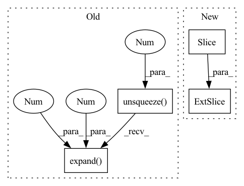

Pattern ID :17949
Before Change
x = x.unsqueeze(-1)
x = self.project_to_steps(x) // BxCxTxS
x = self.dropout(x)
x = x.unsqueeze(0).expand( targets.size(0), -1, -1 , -1 , -1)
copies, bsz, dim, tsz, steps = x.shape
steps = min(steps, tsz - self.offset)
predictions = x.new(bsz * copies * (tsz - self.offset + 1) * steps - ((steps + 1) * steps // 2) * copies * bsz)After Change
else:
pos_num = (end - start) // copies
predictions[start:end] = torch.einsum(
"bct,nbct->nbt", x[..., :-offset, i], targets [..., offset :]
).flatten()
labels[start : start + pos_num] = 1.0
if weights is not None:In pattern: SUPERPATTERN
Frequency: 4
Non-data size: 4
Instances Fragment ID: 58853571
Project Name: mohammadkhalifa/fairseq-tagging
Commit Name: 3335de5f441ee1b3824e16dcd98db620e40beaba
Time: 2020-02-29
Author: alexei.b@gmail.com
File Name: fairseq/models/wav2vec.py
M Class Name: Wav2VecPredictionsModel
N Class Name: Wav2VecPredictionsModel
M Method Name: forward(3)
N Method Name: forward(3)
M Parent Class: nn.Module
N Parent Class: nn.Module
M File Name: fairseq/models/wav2vec.py
N File Name: fairseq/models/wav2vec.py
M Start Line: 411
M End Line: 439
N Start Line: 638
N End Line: 691
Before Change
if (torch.sum(torch.isnan(cam_coords)) > 0) or (torch.sum(torch.isinf(cam_coords)) > 0):
print("Warning: Nan or Inf values in camera coordinate tensor.")
T_c2_c0 = cam_calib["T_c2_c0"].unsqueeze(0).expand( batch_size, 4 , 4 ) .cuda()
cam_coords = se3_inv(T_c2_c0).bmm(cam_coords)
return cam_coords[:, :3, :], valid_pointsAfter Change
batch_size, height, width = disparity.size()
K2, K3 = cam_calib["K2"].cuda(), cam_calib["K3"].cuda()
T_c2_c0 = cam_calib ["T_c2_c0"][: batch_size, :, :].float().cuda()
T_c3_c0 = cam_calib["T_c3_c0"][:batch_size, :, :].float().cuda()
self.b = abs(T_c3_c0.bmm(se3_inv(T_c2_c0))[0, 0, 3])
self.fl = K2[0, 0, 0] Fragment ID: 58853592
Project Name: utiasasrl/hero_radar_odometry
Commit Name: 4eb1bdf7c40f496a3cd9fb79125911fcbf880f89
Time: 2020-08-17
Author: mona.gridseth@robotics.utias.utoronto.ca
File Name: utils/stereo_camera_model.py
M Class Name: StereoCameraModel
N Class Name: StereoCameraModel
M Method Name: inverse_camera_model(4)
N Method Name: inverse_camera_model(4)
M Parent Class: nn.Module
N Parent Class: nn.Module
M File Name: utils/stereo_camera_model.py
N File Name: utils/stereo_camera_model.py
M Start Line: 178
M End Line: 191
N Start Line: 185
N End Line: 202
Before Change
batch_size = cam_coords.size(0)
T_c2_c0 = cam_calib["T_c2_c0"].unsqueeze(0).expand( batch_size, 4 , 4 ) .cuda()
if cam_coords.size(1) == 4:
cam_coords = T_c2_c0.bmm(cam_coords)
else:After Change
batch_size = cam_coords.size(0)
K2, K3 = cam_calib["K2"].cuda(), cam_calib["K3"].cuda()
T_c2_c0 = cam_calib ["T_c2_c0"][: batch_size, :, :].float().cuda()
T_c3_c0 = cam_calib["T_c3_c0"][:batch_size, :, :].float().cuda()
self.b = abs(T_c3_c0.bmm(se3_inv(T_c2_c0))[0, 0, 3])
self.fl = K2[0, 0, 0] Fragment ID: 58853599
Project Name: utiasasrl/hero_radar_odometry
Commit Name: 4eb1bdf7c40f496a3cd9fb79125911fcbf880f89
Time: 2020-08-17
Author: mona.gridseth@robotics.utias.utoronto.ca
File Name: utils/stereo_camera_model.py
M Class Name: StereoCameraModel
N Class Name: StereoCameraModel
M Method Name: camera_model(3)
N Method Name: camera_model(3)
M Parent Class: nn.Module
N Parent Class: nn.Module
M File Name: utils/stereo_camera_model.py
N File Name: utils/stereo_camera_model.py
M Start Line: 141
M End Line: 154
N Start Line: 143
N End Line: 160